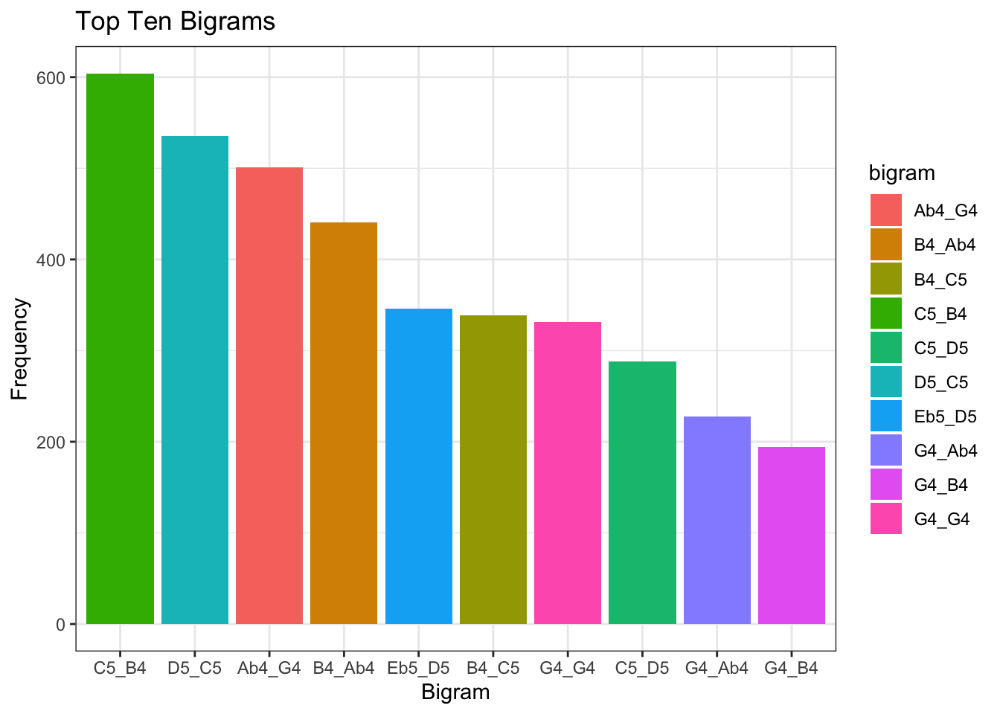
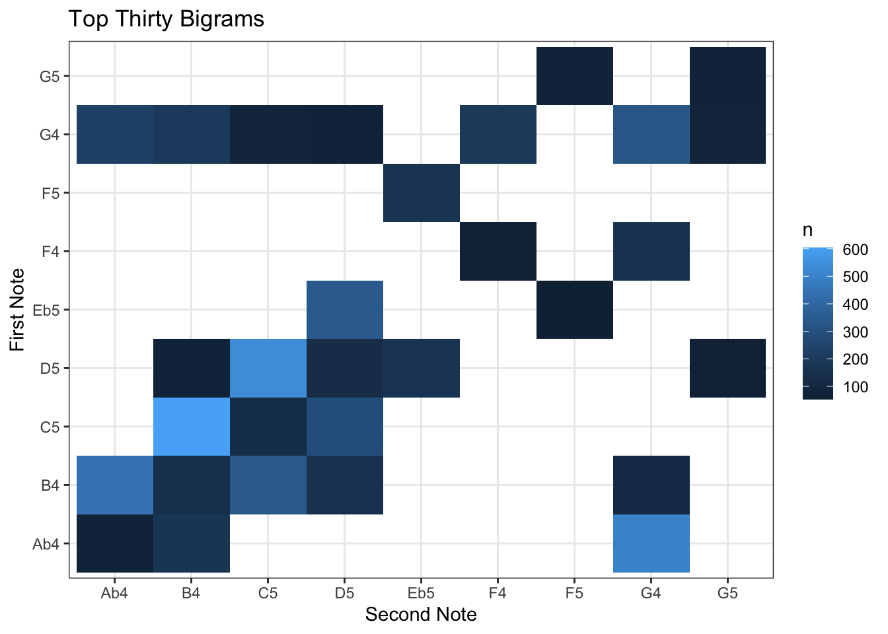
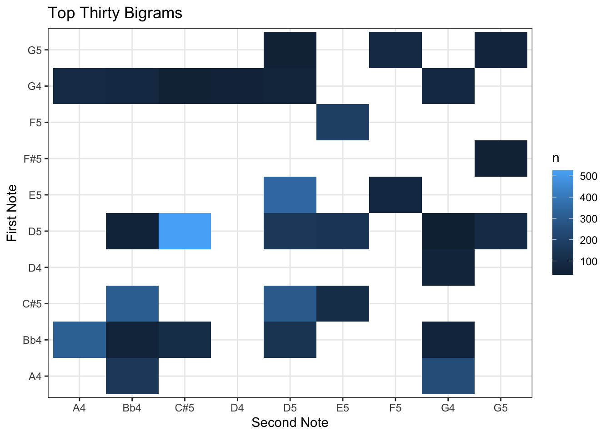
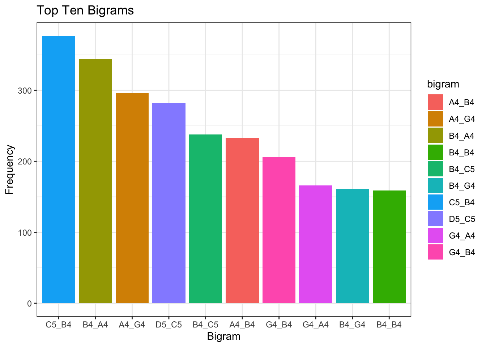
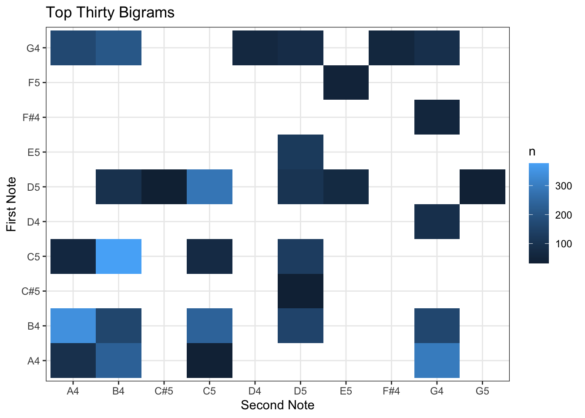
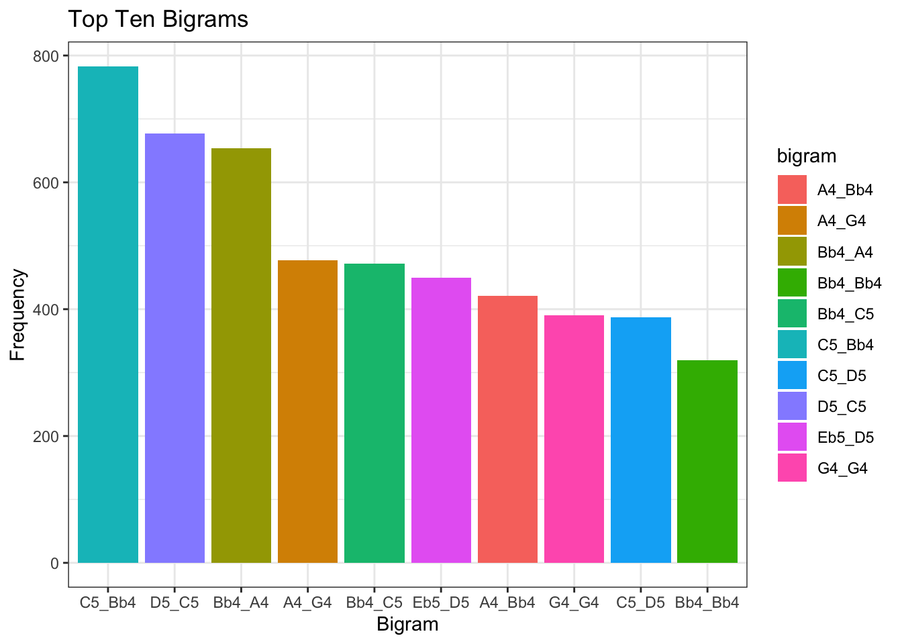
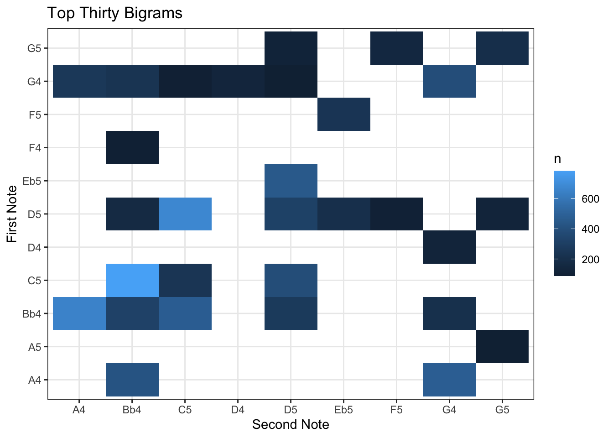

Melodic Tendencies
Pitch-to-pitch transitions
Freygish
And here we see a barplot of the top ten bigrams in Freygish.
And here is a barplot of the top ten bigrams in freygish.

We can also explore these transitions through a transition matrix. Here we have the top thirty transitions, with the first note being on the y-axis, and the note that it’s going to on the x-axis.

Raised Fourth


Major
And here we see a barplot of the top ten bigrams in major.


Minor
Here we see a barplot of the top ten bigrams in minor.

